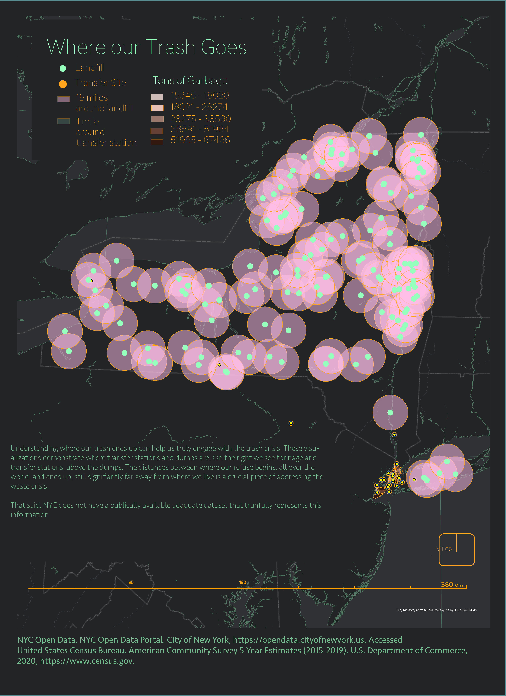
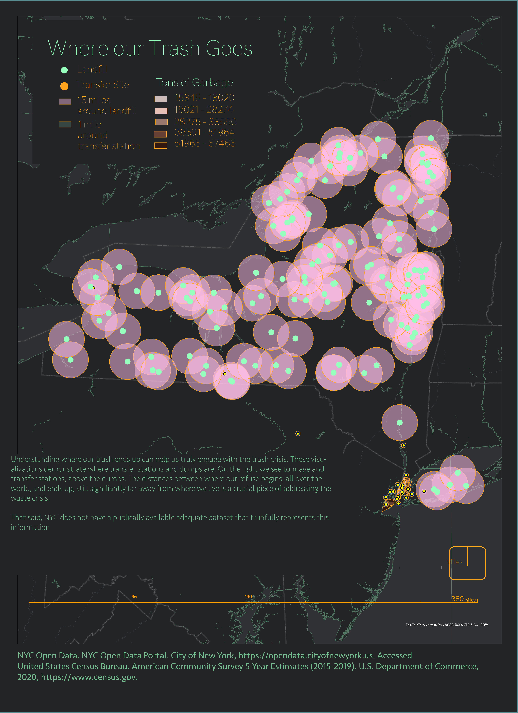

This project examines the successes and shortcomings of New York City’s 2015 Zero Waste Plan. Utilizing city data, it highlights areas of achievement, identifies opportunities for improvement, and pinpoints critical failures.
This study employed a comprehensive approach to analyze the successes and shortcomings of New York City’s 2015 Zero Waste Plan, leveraging Geographic Information Systems (GIS) and data visualization techniques to provide actionable insights. The methodology encompassed three key components:
1. Data Collection and Preparation: Data were sourced from various reputable organizations, including NYC Open Data, the U.S. Census Bureau, the American Community Survey (ACS), the New York City Department of Sanitation (DSNY), and the World Trade Organization. The datasets were cleaned, processed, and standardized to ensure compatibility with GIS software. This process involved geocoding addresses, aggregating spatial attributes, and transforming raw data into mappable layers for further analysis.
2. Spatial Analysis: GIS was employed to conduct spatial analyses of consumption patterns, income disparities, and the implementation outcomes of the NYC Zero Waste initiative. By overlaying demographic, economic, and waste management data, the study examined the geographic distribution of waste production, identified vulnerable communities disproportionately affected by waste mismanagement, and evaluated the spatial equity of Zero Waste program interventions. Advanced spatial techniques were used to uncover relationships between zoning, socio-economic factors, and waste disposal practices.
3. Visualization and Communication: To translate complex findings into accessible formats, infographics and thematic maps were created to convey the study’s key results. These visual tools were designed to inform policymakers and stakeholders, offering a clear narrative about waste trends and the impacts of existing policies. The visuals highlighted areas of success, opportunities for improvement, and urgent challenges, providing a foundation for data-driven decision-making.


 
